Repositório de filmes com link fixo: cadastre vários filmes de uma vez, copie o link de cada um para a resposta automática do WhatsApp e acompanhe as visualizações.
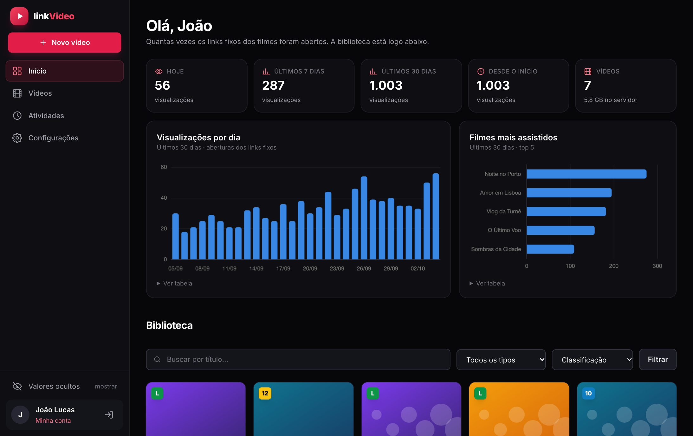
Sumário
1 Como o linkVideo funciona
2 Entrar no painel
3 Menu lateral
4 Início: visualizações e biblioteca
5 Cadastrar filmes (fila de cadastro)
6 Links fixos
7 Vídeos: gerenciar e editar
8 O que quem recebe o link vê
9 Valor de venda e olhinho
10 Usuários
11 Atividades
12 Configurações
13 Dúvidas frequentes
1Preencha um ou mais filmes na fila
2Clique em “Carregar todos os filmes”
3Copie os links fixos
4Coloque na resposta automática do WhatsApp
5Acompanhe as visualizações
1
Como o linkVideo funciona
O linkVideo é um painel para guardar filmes e entregar cada um por meio de um link fixo. Só os usuários do painel (masters) fazem login. Quem recebe o link não precisa de conta: toca e assiste.
Cada filme cadastrado ganha um link fixo, por exemplo …/linkvideo/filme/noite-no-porto. Ele nunca muda, mesmo que você edite o título, troque a capa ou envie outro arquivo de vídeo. Por isso pode ir direto para a resposta automática do WhatsApp.
Quem abre o link vê a capa com um botão grande de assistir. Um toque e o filme começa com som e em tela cheia, no celular ou no computador. O player não tem opção de baixar.
O player se ajusta ao formato do vídeo: gravado em pé (celular) ou deitado.
Dá para cadastrar vários filmes de uma vez e receber todos os links no final.
O Início mostra quantas pessoas abriram os links, por dia e por filme — cada IP conta uma vez por filme.
Link fixo = qualquer pessoa com o link assisteO link não fica preso a um aparelho. Se alguém repassar, a outra pessoa também consegue assistir. Gravação de tela também não pode ser impedida por nenhum site.
Marque Manter conectado se o computador for só seu.
Clique em Entrar.
Para sair, use o ícone de saída no rodapé do menu lateral.
Esqueceu a senha?Peça a outro usuário master para definir uma nova em Configurações → Usuários → Editar.
SegurançaDepois de 5 senhas erradas seguidas o login fica bloqueado por 1 minuto. Toda tentativa errada fica registrada em Atividades.
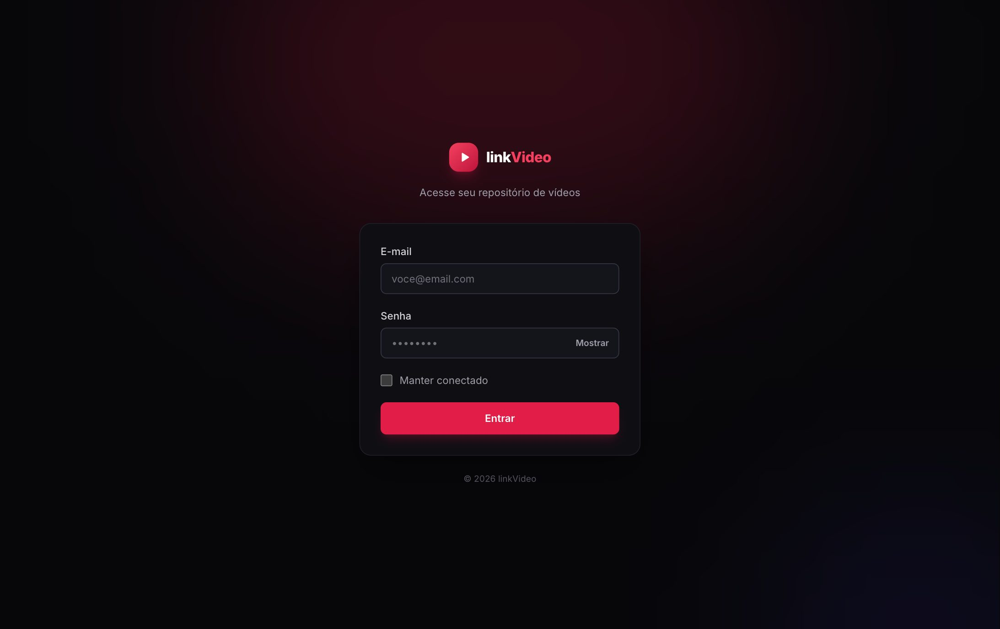
Tela de login
3
Menu lateral
Opção
Para que serve
Novo vídeo
Abre a fila de cadastro, onde você coloca um ou vários filmes.
Início
Visualizações dos links, gráficos e a biblioteca com todos os filmes.
Vídeos
Lista para gerenciar: copiar o link fixo, prévia, editar e excluir.
Atividades
Registro de tudo o que cada usuário fez: quem, o quê, quando, IP e aparelho.
Configurações
Tempo dos valores visíveis, sua conta e o acesso a Usuários.
Rodapé
Olhinho dos valores (mostrar/ocultar), sua conta e o botão de sair.
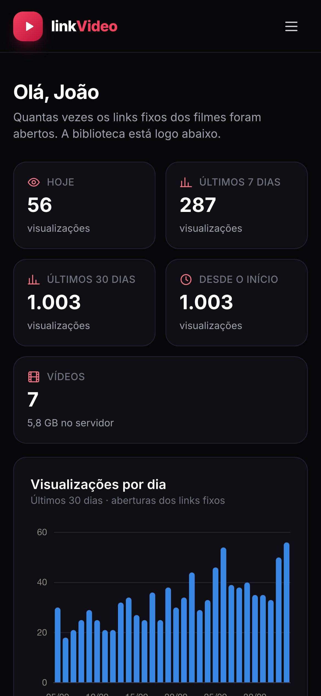
No celular: o painel se adapta
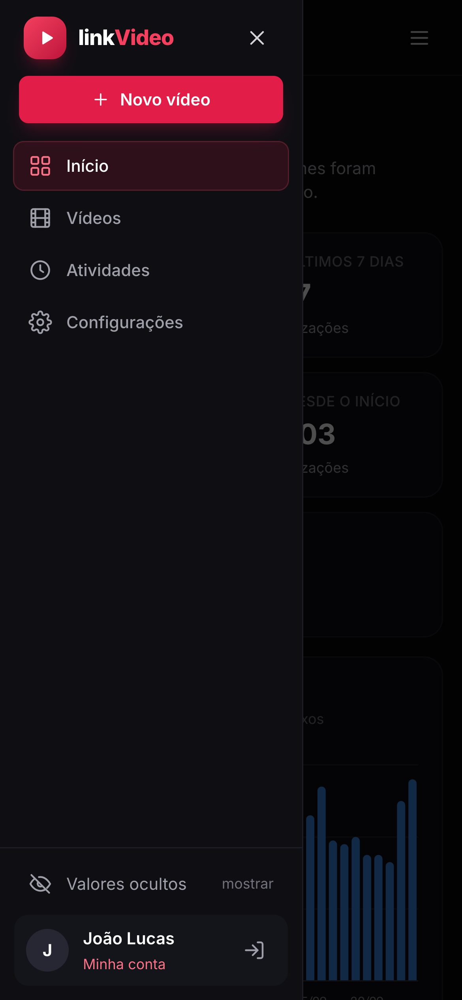
Toque em ☰ para abrir o menu
4
Início: visualizações e biblioteca
A primeira tela mostra quantas pessoas abriram os links fixos dos filmes:
Hoje, últimos 7 dias, últimos 30 dias e desde o início, além do total de vídeos e do espaço que eles ocupam no servidor.
Visualizações por dia: os últimos 30 dias.
Filmes mais assistidos: os 5 filmes com mais visualizações nos últimos 30 dias.
Passe o mouse nas barras para ver o número de cada dia. Em Ver tabela os mesmos números aparecem em lista.
Início com as visualizações
O que conta como visualizaçãoCada pessoa que abre o link de um filme, identificada pelo IP (endereço da internet): o mesmo IP conta uma vez só por filme, mesmo que atualize a página ou volte outro dia. Não contam: a prévia que o WhatsApp gera quando o link é colado na conversa (e outros robôs) e as aberturas feitas por quem está logado no painel. Pessoas na mesma rede Wi-Fi podem aparecer como um IP só.
Logo abaixo dos gráficos fica a Biblioteca, com busca e filtros por tipo e classificação. Clique em Assistir para ver a prévia. Vídeos gravados em pé aparecem altos, com as informações ao lado.
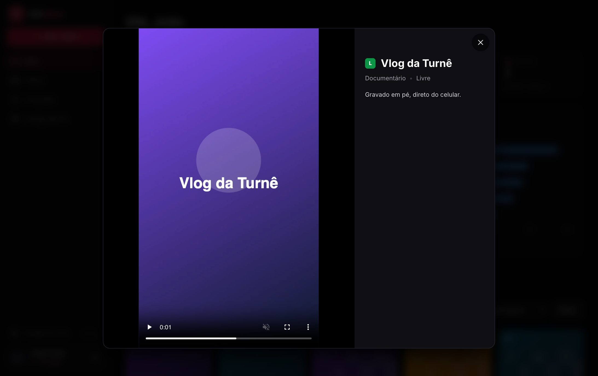
Prévia de um vídeo gravado em pé, no computador
5
Cadastrar filmes (fila de cadastro)
Clique em Novo vídeo. Abre a fila com o Filme 1.
Preencha título, descrição, tipo (romance, drama, ação…), valor de venda e classificação indicativa (Livre, 10, 12, 14, 16 ou 18 anos). No valor, digite só os números: 4990 vira 49,90.
Escolha a capa (JPG, PNG ou WEBP, até 5 MB; ideal em pé, 2:3, ex. 800×1200) e o arquivo de vídeo. Capas pesadas são reduzidas automaticamente para o link abrir rápido.
Para mais filmes, clique em + Adicionar outro filme: aparece um novo bloco com os mesmos campos. Remover tira o filme da fila.
A barra no rodapé mostra quantos filmes estão na fila e o tamanho total. Clique em Carregar todos os filmes.
Os filmes sobem um de cada vez, cada um com a sua barra de progresso. Não feche a página enquanto carrega — o navegador avisa se você tentar.
No final aparece a lista com o link fixo de cada filme (veja a seção 6).
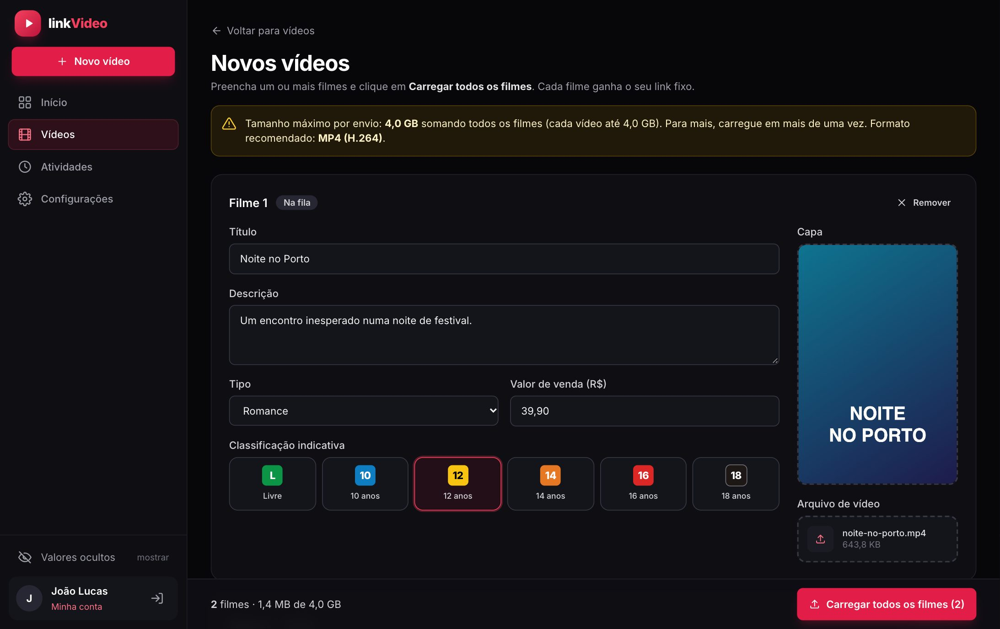
Fila de cadastro com dois filmes
Tamanho máximo por envio: 4 GBO limite vale para a soma de todos os filmes da fila (cada vídeo também pode ter até 4 GB). Se passar, o aviso no rodapé fica vermelho e o botão é bloqueado: remova algum filme e carregue o restante numa segunda vez.
Formato recomendadoMP4 (H.264) toca em todos os navegadores. Aceita também MOV, WEBM, M4V e OGV. Vídeos de iPhone em HEVC podem não tocar no Chrome — exporte em H.264.
Deu erro em um filme?Os outros continuam normalmente. O filme com problema fica marcado como Corrigir, com a mensagem do que falta. Corrija e clique em carregar de novo: se o vídeo já tinha subido, ele não precisa subir outra vez.
6
Links fixos
Assim que a fila termina, aparece o quadro verde “filmes carregados” com o link de cada filme:
Copiar: copia o link daquele filme.
Copiar todos: copia a lista inteira, um filme por linha (Título: link), pronta para colar no robô ou numa conversa.
Cadastrar mais filmes: limpa a fila para um novo envio.
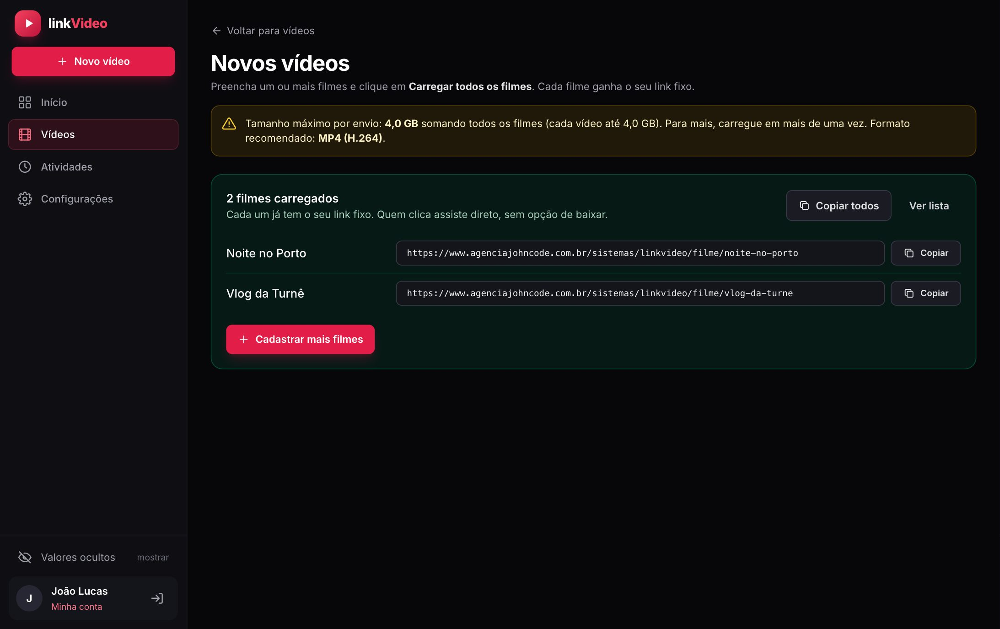
Links fixos prontos para copiar
Como o link é formado
O link é criado a partir do título: Noite no Porto → …/filme/noite-no-porto. Se dois filmes tiverem o mesmo título, o segundo ganha -2 no final.
Ele não muda ao editar título, descrição, capa, valor ou ao trocar o arquivo do vídeo. O link que já está no robô continua funcionando.
O link só para de funcionar se o filme for excluído.
Depois, a qualquer momento, o link de cada filme fica no botão Copiar link fixo da lista de Vídeos.
Links da versão anteriorOs links individuais de clientes da versão anterior do sistema foram desativados. Use sempre os links fixos dos filmes.
7
Vídeos: gerenciar e editar
A lista mostra cada filme com a capa, o título, o espaço que ocupa no servidor (vídeo + capa) e o total de visualizações. Em telas grandes aparecem também tipo, duração e data de cadastro. No topo ficam a busca, os filtros e o espaço usado por todos os vídeos.
Botão
O que faz
▶
Prévia do filme dentro do painel.
Copiar link fixo
Copia o link do filme para colar no WhatsApp ou no robô.
🔗
Abre o link numa nova aba, do jeito que a pessoa vê (sem contar visualização).
✏️ Editar
Altera as informações, a capa ou o arquivo de vídeo. O link continua o mesmo.
🗑️ Excluir
Apaga o vídeo e a capa do servidor. O link do filme deixa de funcionar.
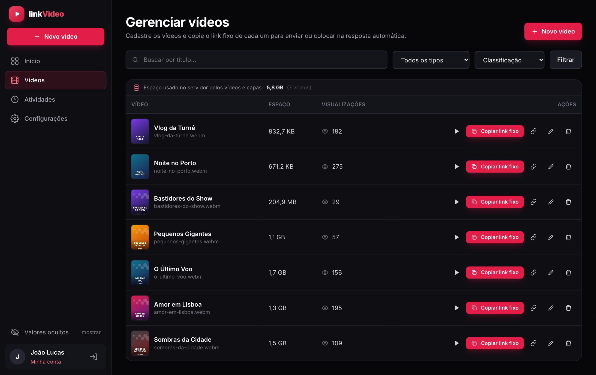
Lista de vídeos
Editar um filme
Em Editar você muda título, descrição, tipo, valor, classificação e capa. Para trocar o vídeo por outra versão, envie o novo arquivo em Arquivo de vídeo e aguarde chegar a 100% antes de salvar. Com os valores ocultos, o campo de valor aparece como “oculto · em branco mantém”: deixe em branco para manter o valor atual.
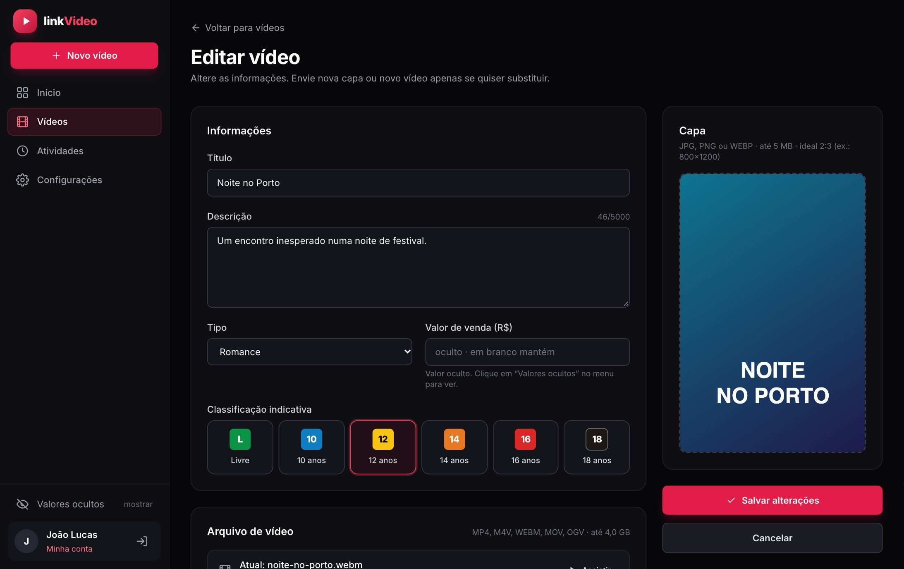
Editar vídeo
8
O que quem recebe o link vê
Não precisa de cadastro nem de senha. A tela abre rápido, já com a capa do filme, o logo, o título e um botão grande de play no meio (“Toque para assistir” no celular, “Clique para assistir” no computador). Enquanto a pessoa vê a capa, o vídeo já vai sendo carregado.
Um toque no botão (ou em qualquer lugar do player): o filme começa com som e em tela cheia. No celular Android, o vídeo deitado já gira a tela.
Aparecem os controles: pausa, volume, barra de tempo e sair da tela cheia. Se a internet engasgar, aparece “Carregando…”.
Fora da tela cheia, o vídeo em pé ocupa a altura da tela e o deitado, a largura; nas laterais aparece a capa desfocada. Abaixo do player ficam o título, o tipo, a classificação e a descrição.
Por que precisa de um toque?Nenhum navegador deixa um site começar um vídeo com som ou abrir a tela cheia sozinho — vale para qualquer site. Por isso o botão: é um toque só, e o filme já começa com som e em tela cheia.
Sem downloadO player não tem botão de baixar, o clique direito é bloqueado e o endereço do arquivo de vídeo não abre fora da página do filme.
1. Ao abrir: capa e botão2. Depois do toque: tela cheia, com somVídeo deitado no celular
No computador: “Clique para assistir”
9
Valor de venda e olhinho
O valor de venda é informado no cadastro e serve para o seu controle: ele não aparece para quem abre o link nem nas listas. Por segurança, fica escondido também na tela de edição até você digitar a senha.
No rodapé do menu, clique em Valores ocultos → mostrar.
Digite a sua senha e clique em Mostrar.
O valor aparece na edição dos filmes por 15 minutos (ajustável em Configurações). Para esconder antes, clique em Valores visíveis → ocultar.
Fica registradoCada vez que alguém mostra os valores — ou erra a senha tentando — o registro vai para Atividades.
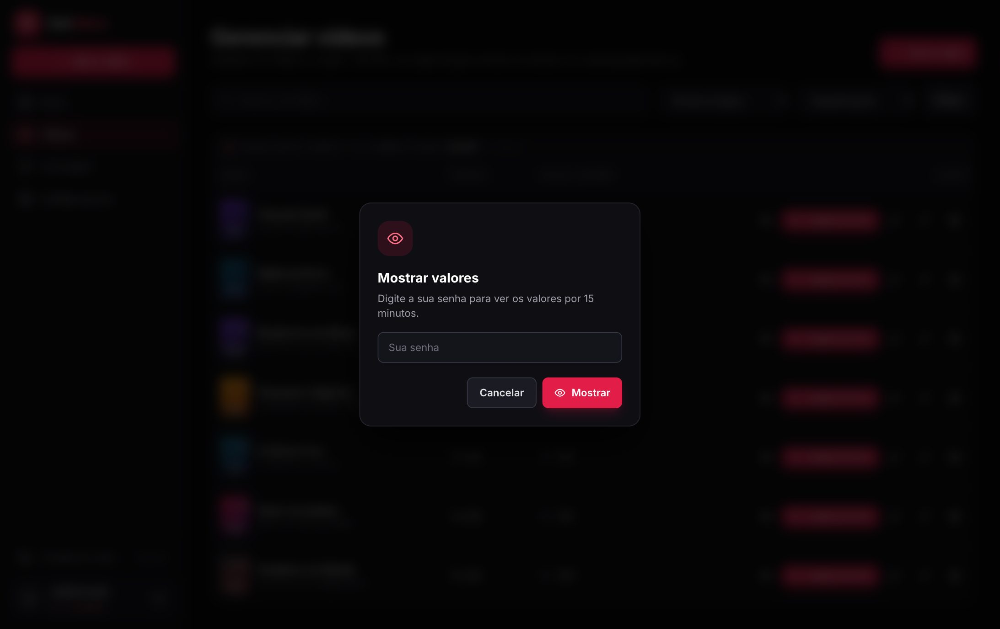
Pedido de senha do olhinho
10
Usuários
Fica em Configurações → Usuários.
Novo usuário: nome, e-mail e senha (mínimo 8 caracteres). Todo usuário entra como master e acessa tudo.
Editar: muda nome, e-mail ou senha (deixe a senha em branco para manter).
Minha conta (rodapé do menu): para trocar os seus próprios dados e senha.
Excluir: a pessoa perde o acesso; o histórico dela continua em Atividades. Ninguém exclui a própria conta e sempre fica pelo menos um master.
Atividades (em cada linha): mostra só o que aquele usuário fez.
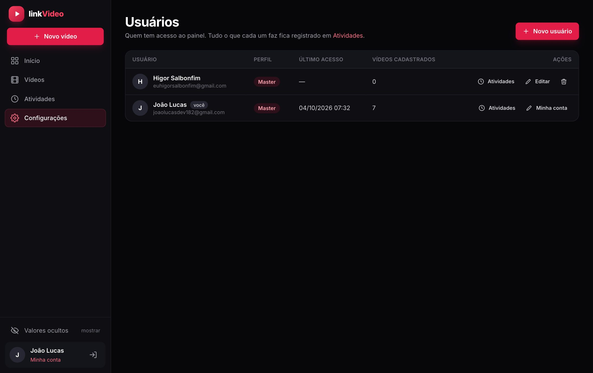
Usuários
11
Atividades
Tudo o que os usuários fazem no painel fica registrado com quem, o quê, quando, IP e aparelho: entradas e saídas, senhas erradas, filmes cadastrados, editados ou excluídos, usuários, configurações e quem mostrou os valores. Filtre por usuário, por tipo de ação ou busque por texto. Os registros da versão anterior (clientes) continuam no histórico.
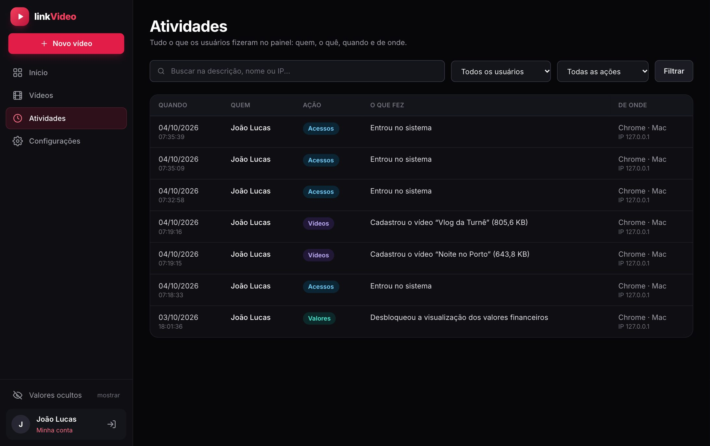
Registro de atividades
12
Configurações
Valores ocultos (olhinho): por quanto tempo o valor fica visível depois da senha (5, 15, 30 ou 60 minutos).
Minha conta: atalho para trocar seus dados e senha.
Usuários e atividades: atalhos para cadastrar outros masters e ver o registro.
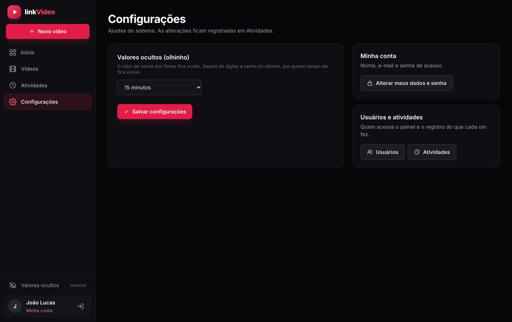
Configurações
13
Dúvidas frequentes
Se eu mudar o título do filme, o link muda?
Não. O link é criado no cadastro e não muda mais. O robô do WhatsApp pode continuar com o mesmo link.
Quero trocar o vídeo por uma versão melhor.
Em Vídeos → Editar, envie o novo arquivo em Arquivo de vídeo e salve. O link continua o mesmo.
Abri o meu link e a visualização não aumentou.
É o esperado: quem está logado no painel não conta, nem a prévia do WhatsApp, e cada IP só conta uma vez por filme. Por isso, atualizar a página também não soma.
O filme não começa sozinho quando abro o link.
É assim em qualquer site: o navegador só libera som e tela cheia depois de um toque. A tela já abre com a capa e o botão grande; um toque e o filme começa.
A qualidade (HD) depende do quê?
Do arquivo enviado: o player mostra o vídeo na qualidade original. Cadastre em 1080p ou 720p, MP4 (H.264). Arquivos muito pesados demoram mais para começar em internet de celular.
Preciso carregar mais de 4 GB de filmes.
Divida em mais de um envio: carregue uma parte, clique em Cadastrar mais filmes e carregue o restante.
O envio de um filme falhou.
Use uma conexão estável e clique em carregar de novo; o envio é feito em partes e os outros filmes não são afetados. Se acontecer sempre, avise o suporte da John Code.
O vídeo não toca no navegador de quem recebeu.
Prefira MP4 (H.264). Edite o filme e envie o arquivo nesse formato — o link continua o mesmo.
Esqueci minha senha.
Outro usuário master pode definir uma nova em Configurações → Usuários → Editar.
Quanto espaço os vídeos ocupam?
Em Vídeos aparece o espaço de cada um e o total; no Início, o total ao lado do número de vídeos. Os vídeos contam no espaço contratado da hospedagem.